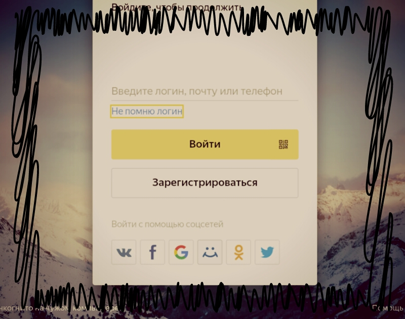
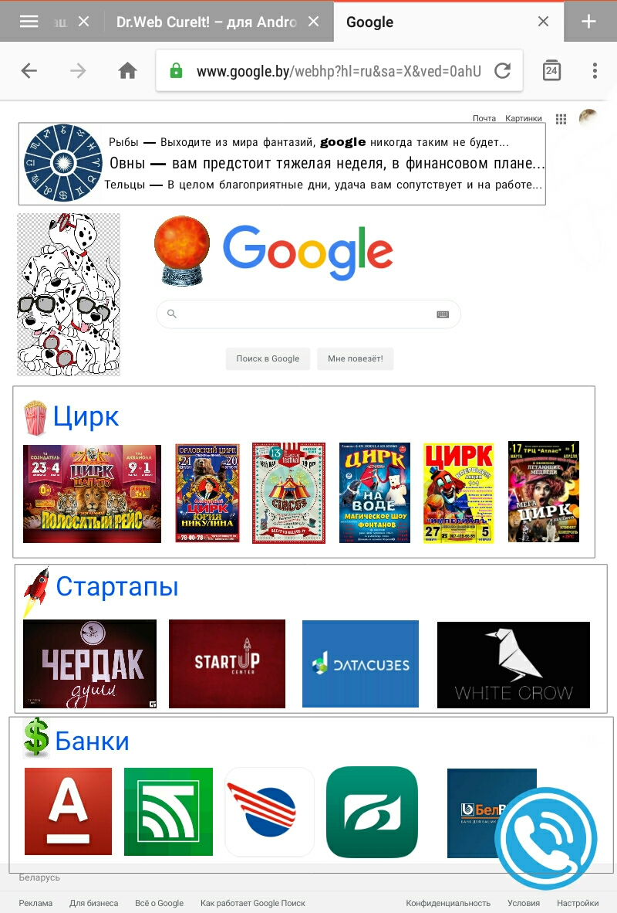

Телепузики захватили Яндекс поиск!В то время как, благодаря распостранению кабельного телевидения колличество каналов у среднестатистического телезрителя выросло в среднем до 50 каналов, фанатам телевиденья и этого мало, теперь они хотят смотреть телевизор через компьютер и что бы им там не показывали рекламу как в обычном телике, а если точнее они начали делать компьютер из телевизора. Всё перепуталось и теперь каналы ютуба показывают по телевизору, а в интернете обозревают телепередачи каналов телевизора. Можно предположить, что в ближайшем времени на главной странице Яндекс поиска появятся списки телевизионных каналов, которые будут показыватся согласно ваших предпочтений из статистики поисковых запросов, в результате чего обладатели современных телевизоров со встроенным доступом в интеренет, смогут с помощью "лентяйки" выбирать из предлогаемых телепередач. В то время как из Яндекса делают помесь насорога и бульдога в виде социальной сети, привет Маил.ру под названием Яндекс "дзен", конкуренты из майкрософт аутлук и яхуу! тихонько посмеиваются в перманентные усы. Главную страницу Яндекса теперь можно разделить на две части:
При этом нижняя часть постоянно внедряет непонятные новшества типа получить плюс в меню пользователя и это при том, что плюс получается путём добавления второго аккаунта. Ещё одна мелочь, которая мне непонятна, это невозможность выбора адресса емейла, который будет использоватся по умолчанию (то есть в почте его можно выбрать а в аккаунте нет, в результате под логином можно наблюдать емейл адресс в зоне страны, в которой ты проживаешь( зачем это делается непонятно, наверное для тех у кого вечная амнезия и свой емейл по логину они вспомнить немогут). В общем у меня слаживается впечатление, что в галовной офис Яндекса прилетели Телепузики и тыкают разработчикам как надо делать и при этом ржут, потому что это по их мнению смешно. Вы же помните эту дурацкую передачу, которую показывали когда-то для детишек по телику, ну эту про четырёх покемонов с антенами на куполах, они ещё так весело бились животами друг о дружку? У меня есть подозреня пологать, что именно Телепузики придумали и внедрили "Магазин на диване", при этом поразительно как быстро они узнают недавно смнившийся номер домашнего телефона и начинают звонить предлагая посетить их презентацию нового чудо товара, при этом отмечу, что среди них могут встречатся и неплохие по качеству. Такое ощущение что телепузики обладают секретными технологиями по сбору баз данных номеров телефонов потенциальных клиентов и все они мечтают стать "Волками с Уолл Стрит", втюхивая что-нибудь очередному клиенту. Вспоминая как выглядела главная страница Яндекса в 2016 году, можно предположить, что все дизайнеры UI скончались, а на их место пришли маркетологи желающие везде, где это только возможно всунуть плавающую кнопку с чатом.Ребята вам осталось всунуть где нибудь сверху кнопку звонок руководителю Яндекса с помощью Вайбера и считайте, что вы попалились! При всём при этом забавно наблюдать, что в поиске GOOGLE особых изменений нет, и парсер новостей из своего blogpost они на главной странице почему-то не делают, впрочем незаметно на главной их поисковика и ссылок на Яндекс и Bing. В то время как вливания Mаил.ру, выкупишего все основные социальные сети СНГ нета остались незамеченными, гугл так же не стоит на месте и всунул авторизацию на Яндексе с помощью своего аккаунта (вспоминается плавающая кнопка с чатом, где вы пообщаетесь с менеджером продаж, так вот с авторизацией google тоже самое, она уже почти везде, как и ненавистная всем ReCapcha заставляющая нас тыкать на фотки с машинками, светафорами и пешеходными переходами - привет плагинам из Wordpress). В результате несовсем понятно, кто же руководит Яндексом? Маил.ру, фэйсбук или google с твиттером? И всё таки наверное это Телепузики, которые в совершенстве изучили администрирование CMS Wordpress, а заодно решили превратить в него все крупные ресурсы рунета, потому что они невиноватыя, он сам пришёл! Так что теперь на главной странице можно лицезреть ещё и скидки из продуктовых магазинов, бля вот чего нам не хватало, так это их скидок, на товары, которые никто не хочет покупать.Теперь город из которого вы ищите под прицелом, но от Яндекса дзен вам никак не скрыться, за исключением одного метода - перехода на другой более короткий адресс поиска YA.RU, с главной страницы которого решили убрать всё лишнее, по умолчанию оставив форму поиска и вход в аккаунт. К слову сказать я как-то забрёл в Ирландский интернет и решил поискать у них местную фришную почту, как оказалось их уже и нет, а последний такой сервис висит с надписью мы прекращаем свою работу, успехов вам с вашим международным аккаунтом google! Вспоминая основные мировые поисковики Яндекс поиск теперь больше всего напоминает поисковик Yahoo! Основой контента главной страницы которого являются новости, между прочим и у яху есть сервис емаил, в результате чего можно предположить и тайную борьбу и на этом поприще, на территории к примеру СНГ в сфере интернет почты два основных конкурента - Mail.ru и Яндекс почта, естественно не считая Gmail. Так вот в то время как google производит сбор информации о ваших сторонних аккаунтах на других сервисах не скрывая этого, Mail.ru делает тоже самое, но с помощью своих социальных сетей, в список которых входят теперь и однокласники. При всём при этом Mail.ru почему-то считаются поисковиком, хотя и продвигают в большей степени свои социальные сети, на которых теперь запущена монетизация в виде контекстной рекламы, с одним нюансом владельцы пабликов и лент за размещение рекламы на их страницах не получают нешиша. Так когда же Телепузики обратят внимание на поисковик Mail.ru, который всех достал своим вирусным продвижением через п.о. и улучшат его в лучшую сторону? У меня появилось пару идей которые можно было бы протестировать на этом ресурсе, одна из них к примеру это вывести подборку лучших каналов Вконтакте и Однокласников, со статьями наподобии Яндекс Дзена, и вывести к примеру где нибудь вверху кнопку минус, что бы узнать какие минусы вас ждут в случае оформления подписки на какой нибудь из сервисов, ну к примеру сервис платной интернет почты. Или к примеру вот есть замечательный сервис Рутуб, а что если на главной меил ру размещать подборки видеороликов согласно интересам? Ну к примеру топ 100 порно роликов рунета, по моему неймингу Маил ру будет к лицу, учитывая что большая часть порнухи хостится на серверах ВК.Как вариант можно впихнуть акционные товары из сексшопов. Кстати как ни странно, давно уже не слышно о браузере Амиго, который походу плавно перетёк в Яндекс браузер. В общем мы ждём теперь телепузиков и на Мail.ru, ну когда же они прилетят в их головные офисы и начнут улучшать этот загнивающий сервис поиска в интернете, улучшать в лучшую, современную сторону без возможности настроек со стороны пользователей. А в следующем материале вы сможете почитать о том чего Телепузики наворотили в Рекламной Сети Яндекса.  |
 
|
Блог |